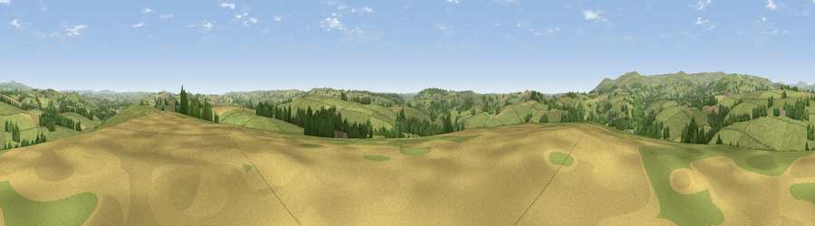

Diptford Downs
#19038 in England · top 40% of its area beats it · near DiptfordThe view, rendered

A 360° render of this exact spot computed from the terrain model, tree cover and land cover — summer colours, afternoon light, calibrated against photographs of famous viewpoints. Real trees, hedges and buildings will differ in detail.
The panorama
Grey silhouette: terrain skyline in each direction (720 bearings, Earth curvature and refraction included). Dashed green: skyline with trees (+15 m) and buildings (+8 m) as obstacles. Blue strip: how far the ground is visible on each bearing.
Where the view opens
Wedge length = distance to the farthest visible ground on that bearing (vegetation-aware). Rings at 10, 25 and 50 km.
What fills the view
79% grassland · 12% woodland · 9% cropland ·
Angular shares of the visible panorama (visual magnitude), not map area. Landscape diversity 0.30 (0–1 Shannon).
Key numbers
More beautiful places nearby
The staircase of upgrades: each row has a higher view potential than everything closer. Driving times are estimates from straight-line distance, calibrated against real road routing — check an actual route before setting out.
| Place | Direction | Drive | Score |
|---|---|---|---|
| Stert Hill | SE · 2 km | ~4 min | 57.7 |
| Brent Hill | NW · 5 km | ~10 min | 79.3 |
| Ugborough Beacon | W · 6 km | ~13 min | 79.5 |
| Western Beacon | W · 8 km | ~15 min | 81.9 |
| Beacon Hill | ENE · 13 km | ~25 min | 82.3 |
| Viewpoint near Lee Moor | WNW · 18 km | ~31 min | 82.7 |
| Viewpoint near Kingswear | ESE · 19 km | ~33 min | 83.8 |
| Viewpoint near Hope | SSW · 20 km | ~34 min | 84.4 |
50.40798, -3.78922 · source: dobih hill · position refined by local search. Computed location — check access rights before visiting.